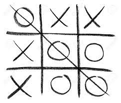

Regras
O tabuleiro é uma matriz de três linhas por três colunas.
Cada um dos dois jogadores escolhem uma marcação: 'X' (xis) ou 'O' (bolinha).
Os jogadores jogam alternadamente e cada um deve escolher uma lacuna vazia para colocar sua marcação.
O objetivo de cada jogador é conseguir formar uma linha inteira, podendo ser uma vertical, horizontal ou diagonal.
